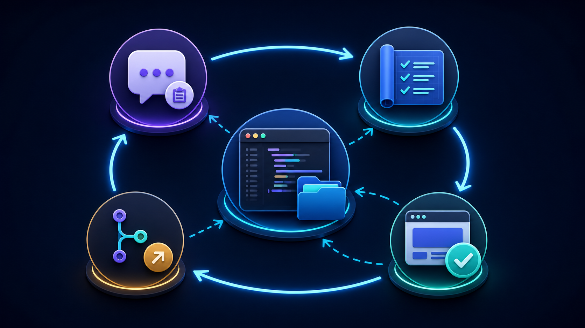

Windows 11：ChatGPT Work 與 Codex 設定指南
本指南只針對 Windows 11。先完成 ChatGPT 桌面版安裝，再依任務選擇 Chat、ChatGPT Work 或 Codex；若要處理課程 project，最後才以保守方式設定 Codex 的工作範圍與核准模式。本版另外深入介紹 Work 最常見的使用情境，以及如何用 Codex 以「vibe coding」的方式打造一個 Web App project。
更新說明
近期版本也帶來以下變化，建議上課前先留意：
- 桌面 app 更新（2026 年 7 月 30 日，v26.727）：內建瀏覽器新增網址列，可直接找回瀏覽紀錄或以 Google 搜尋；Chrome 擴充功能可提及目前分頁與畫面上選取的文字；程式碼審查支援 multi-repo（一次看到 multi-folder project 中每個 repo 各自的變更行數）；另外新增 Activity（顯示哪些對話最近需要你留意）與放大版圖片檢視器。
- 語音輸入：桌面 app 新增 ChatGPT Voice，可在 Chat、Work、Codex 中用語音下達或調整指令；課堂示範前建議先確認麥克風權限與環境是否安靜。
- 新增「Approve for me」（自動核准）模式：在 Settings → General 的 Permissions 可以另外開啟這個模式，它維持與「先要求核准」相同的工作區邊界，但把原本要你人工判斷的跨界請求改成自動審查。課程情境仍建議維持先要求核准，不要為了省事而開啟自動核准，詳見下方「安全設定 Codex」。
- 模型更新：2026 年 8 月 31 日起，Codex 將不再提供 GPT-5.4／GPT-5.4 mini 給以 ChatGPT 帳號登入的使用者；設定檔或指令中若還指定 gpt-5.4，需改成 gpt-5.6-terra，gpt-5.4-mini 則改成 gpt-5.6-luna。
- Codex Sites（預覽）：2026 年 6 月上線，透過
@Sites用一段文字描述內部工具（例如儀表板、追蹤表、知識庫），Codex 會建置、測試並部署到 OpenAI 代管的網址，直接在工作區內分享，不需要自己準備專案資料夾。目前僅開放 ChatGPT Business（預設開啟）與 Enterprise（管理員開關），Free／Plus／Go／Pro 尚未開放；也沒有公開網址、自訂網域，也不能匯出程式碼或資料，僅供工作區內部使用。多數課程帳號屬於 Free 或 Plus，建議先確認方案是否支援；若要打造可完整掌控、能部署到任何地方的 Web App project，請改用下方「深入 Codex」介紹的本機工作流程。
Windows 11：安裝與開啟 ChatGPT Work
- 從 ChatGPT 官方下載頁安裝或更新 Windows 版 ChatGPT 桌面 app。
- 開啟 app，使用你的 ChatGPT 帳號登入；可用功能會因方案、組織設定與推出狀態而不同。
- 要做研究、分析、文件、簡報或其他多步驟成果時，先選 ChatGPT，再在新對話上方切換到 Work。
- 要處理專案資料夾、程式碼、指令或 diff 審查時，從 ChatGPT 下拉選單選 Codex。
Chat、Work 與 Codex 比較
| 介面 | 最適合的任務 | 本機 project | 工具與審查 | 預期成果 |
|---|---|---|---|---|
| Chat | 快速問答、解釋、構想或短文草稿。 | 通常不需要。 | 以對話與快速確認為主。 | 立即可閱讀的回答或草稿。 |
| ChatGPT Work | 需要多個步驟的研究、分析、文件、簡報或可審查成果。 | 需要這台電腦的檔案或 app 時選 Work locally。 | 可使用檔案、plugin 與已核准工具；你可看進度與調整方向。 | 可重用、可審查的交付成果。 |
| Codex | 專案資料夾、程式碼、指令、驗證與可重複開發流程。 | 先選對唯一的課程 project。 | 使用權限與核准模式；重要改動先看 diff。 | 經驗證的檔案、程式碼與專案變更。 |
手機上可左右滑動比較表，保留每一欄的完整內容。
Work 深入：常見使用情境
ChatGPT Work 的強項，是把零散的筆記、檔案或研究資料，轉成一份可以直接審查、重複使用的成果。以下是幾種最常見、也最適合課程情境的用法。

1. 把筆記或研究整理成簡報
把上課講義、會議紀錄或研究筆記交給 Work，請它針對特定對象整理出重點、補上佐證資料，並標出需要你人工確認的地方，最後回傳草稿讓你審查，而不是直接定稿。
2. 把資料整理成比較用的試算表
當你要在多個選項（工具、廠商、演算法、雲端方案）之間做決定時，請 Work 把來源資料整理成一份試算表：列出關鍵評估項目、幫每個選項評分、標出風險或缺漏資訊，並在最後加一頁摘要與建議。
3. 排程重複性的監控或彙整任務
需要 Work 定期重複、監控或更新某件事時（例如每週彙整專題進度、追蹤某個網站或資料來源的變化），可以使用排程任務，讓工作在 Cloud 模式下持續執行，不受限於這台電腦是否開機。
4. 產出可直接審查的文件或報告
對於期末報告、教學觀察紀錄或計畫申請書這類需要固定格式的文件，可以請 Work 依照指定架構、來源與字數限制產出完整草稿，並在關鍵段落標明引用來源，方便你核對。
5. 串接多個工具的重複工作流程
如果同一件事你每次都要手動跨好幾個工具（例如彙整表單意見、比對成績、輸出通知），可以請 Work 用已核准的 plugin 或檔案存取權限，把整個流程串起來，並在關鍵步驟停下來讓你核准。
下指令的小技巧
要讓 Work 的成果更接近你要的樣子，提示中盡量說清楚：想要的成果與格式、要用的來源或 plugin（可用 @ 提及）、範圍限制（例如「只用這三份文件」「只列前五名」）、你認定的「好」是什麼樣子，以及什麼時候要停下來讓你審查或核准。任務越複雜，指令就該越具體，而不是越簡短。
選擇執行位置

Work locally 適合必須使用這台電腦上的檔案或 app 的任務，例如課程資料夾、瀏覽器或本機工具。Cloud 適合希望工作在電腦關閉後仍能繼續，或想在網頁與手機接續查看的任務。選擇前先問：這個任務是否真的需要這台電腦上的檔案或 app？
安全設定 Codex
- 在 Codex 開始前，確認只選到這次課程要使用的 workspace 或 project 資料夾。
- 如果這個 project 已加入多個資料夾（multi-folder project），要逐一確認每個已加入的資料夾都在課程範圍內；Codex 可以讀取與修改每一個已加入的資料夾，不是只有主要資料夾（primary folder）。
- 先選先要求核准（Ask for approval）。它可在目前工作區內工作，想跨出範圍時會暫停讓你判斷。
- Settings 中另外有Approve for me（自動核准）可以開啟，它維持相同的工作區邊界，但把原本要你判斷的跨界請求改成自動審查。課程情境不建議預設開啟，因為這正是最需要人工判斷的時刻。
- 不要預設開啟完整存取權（Full access）。它只在你了解風險且信任該 project 時才有必要。
- 把網路、瀏覽器、plugin、MCP 與外部工具視為需要理由的能力；看懂用途再核准。
- 學生姓名、學號、成績、帳號、金鑰與行政資料先限制範圍，或先做去識別化。
- 看到核准要求時先讀內容；完成後檢查 diff、輸出檔案與實際結果。
深入 Codex：以 vibe coding 建立 Web App 專案
「Vibe coding」是指用自然語言描述你想要的成果，讓 Codex 產生、執行並修正程式碼，你則專注在說清楚需求、看懂它的計畫，並在關鍵步驟審查與核准，而不是逐行手寫程式碼。以下是在本機課程 project 中，用 Codex 從零打造一個 Web App 的建議流程。

開始之前：先準備一個乾淨的專案資料夾
- 建立一個新的空白資料夾（例如
my-course-webapp），只放這個 project 需要的內容；不要選到桌面、Documents 或其他課程共用的上層資料夾。 - 在 ChatGPT 桌面 app 選 Codex，把這個資料夾加入 project；之後若要拆前後端或加測試資料夾，再用 multi-folder project 逐一加入，並確認每個加入的資料夾都在允許範圍內。
- 維持先要求核准模式。建立網站或 app 的過程會大量新增檔案、安裝套件、執行指令，這正是最需要人工審查的階段，不要在這個階段切到 Approve for me 或 Full access。
用一句話描述你要的 Web App
把想要的成果講清楚，而不是講技術細節：目標使用者、主要功能、想用的技術（如果有偏好）、資料要存在哪裡。讓 Codex 先提出計畫或檔案結構，你看過再讓它動手。
建議的來回流程
- 看計畫再核准：Codex 提出檔案結構或步驟時，先確認是否合理、有沒有多餘的外部服務或非必要的套件。
- 逐步核准安裝與建立檔案：像
npm install這類指令、新增設定檔（例如 .env）都屬於跨出工作區或有風險的動作，看懂用途再核准。 - 請 Codex 啟動開發伺服器並在瀏覽器打開：例如「啟動 dev server 並告訴我要開哪個網址」，用你自己的眼睛看畫面，而不是只看 Codex 的文字說明。
- 用自然語言迭代功能：「加一個可以標記已完成的按鈕」「表單送出後要有成功提示」，一次只加一兩個功能，方便你逐次審查 diff。
- 每次改動都看 diff：尤其是牽涉到帳號密碼、API 金鑰、外部網路請求或資料庫連線字串的檔案，看不懂的地方先讓 Codex 解釋，不要直接核准。
- 自己動手測試：換不同輸入、刻意輸入錯誤格式、重新整理頁面看資料是否還在，確認結果符合預期，而不是相信「看起來完成了」。
- 完成後才進行版本控制或部署：先用 git 記錄一個穩定版本，再考慮是否要部署；部署到任何公開網址前，先移除或保護測試用的假帳密與金鑰。
另一個選項：Codex Sites（僅限特定方案）
如果你的帳號屬於 ChatGPT Business 或 Enterprise，Codex 另外提供 @Sites 功能：直接用一段文字描述一個內部工具（例如小型儀表板、追蹤表、知識庫），Codex 會建置、測試並部署到 OpenAI 代管的網址，在工作區內分享，不需要自己準備專案資料夾或部署流程。但它目前不提供公開網址、自訂網域，也不能匯出程式碼或資料，僅供工作區內部使用；Free、Plus、Go、Pro 帳號在推出時尚未支援。多數課程帳號用不到這個功能；如果你的期末目標是一個可以掛在自己網域、部署到 Vercel 或其他平台、甚至放進作品集的 Web App project，仍建議採用上面本機 Codex 的流程，讓你保有完整的原始碼與部署控制權。
常見地雷
- 一次要求太多功能，導致 diff 太大看不懂分成小步驟，一步一步來。
- 看到「安裝套件」「執行指令」的核准請求就反射性按同意先看套件來源與用途是否合理。
- 把測試用的帳號密碼、API 金鑰直接寫進程式碼請 Codex 改用環境變數，並確認 .env 之類的檔案不會被加入版本控制。
- 只憑 Codex 的文字回報就認定完成務必自己打開瀏覽器操作一次。
保持參與與審查

不論使用 Work 或 Codex，都不要把任務交出去後就不再理會。你可以看進度、回答補充問題、改變方向，並在重要動作前做判斷。完成後仍要檢查結果是否符合目標、引用或資料是否正確、檔案是否放在預期位置，以及是否還需要人工修改。
課前檢查
- Windows 11 的 ChatGPT 桌面 app 已安裝或更新，且我已登入正確帳號。
- 我已選對 Chat、Work 或 Codex；需要本機檔案或 app 時，Work 選 Work locally。
- 使用 Codex 時，我已選對唯一的課程 workspace，並確認每一個已加入的資料夾（包含次要資料夾）都在允許範圍內。
- 我已使用先要求核准，沒有預設開啟完整存取權。
- 我會檢查核准要求、diff 與最後輸出結果。
參考來源
Windows 11: ChatGPT Work and Codex Setup Guide
This guide is for Windows 11 only. Install the ChatGPT desktop app first, then choose Chat, ChatGPT Work, or Codex for the task. Use the conservative Codex configuration only when you need to work in a course project. This edition adds a deep dive into Work's most common use cases and a walkthrough for building a web app project with Codex through vibe coding.
What changed
Recent releases also bring the following changes, worth noting before class:
- Desktop app update (July 30, 2026, v26.727): the built-in browser gained an address bar for revisiting history or searching Google, Chrome extension integration for mentioning open tabs and selected page text, multi-repo diff review across every repository in a multi-folder project, plus a new Activity view (which chats need your attention) and a larger image viewer.
- Voice input: the desktop app added ChatGPT Voice, so you can speak instructions or steer tasks in Chat, Work, and Codex. Check microphone permissions and room noise before demoing this in class.
- New "Approve for me" (auto-review) mode: Settings → General → Permissions can enable this mode. It keeps the same workspace boundary as Ask for approval, but sends boundary-crossing requests to automatic review instead of asking you. This guide still recommends keeping Ask for approval for course work rather than enabling auto-review for convenience — see "Configure Codex safely" below.
- Model change: starting August 31, 2026, Codex retires GPT-5.4 and GPT-5.4 mini for users signed in with a ChatGPT account. Replace gpt-5.4 with gpt-5.6-terra and gpt-5.4-mini with gpt-5.6-luna in any config or command that still names the old models.
- Codex Sites (preview): launched June 2026. Describe an internal tool (a dashboard, tracker, or knowledge base) with
@Sites, and Codex builds, tests, and deploys it to an OpenAI-hosted URL shared inside your workspace, with no project folder needed. It is currently limited to ChatGPT Business (on by default) and Enterprise (admin-controlled); Free, Plus, Go, and Pro are not yet supported, and there is no public URL, custom domain, or code/data export — it is workspace-internal only. Most course accounts are Free or Plus, so check your plan first. For a web app project you want to fully own, inspect, and deploy anywhere, use the local Codex workflow in the deep dive below instead.
Install on Windows 11
- Install or update the Windows ChatGPT desktop app from the official ChatGPT download page.
- Open the app and sign in with your ChatGPT account. Available features can differ by plan, organization settings, and rollout.
- For research, analysis, documents, decks, or other multi-step deliverables, select ChatGPT, then switch the new chat to Work.
- For a project folder, code, commands, or diff review, select Codex from the ChatGPT dropdown.
Compare Chat, Work, and Codex
| Surface | Ideal task | Local project | Tools and review | Expected outcome |
|---|---|---|---|---|
| Chat | Quick answers, explanations, ideas, or a short draft. | Usually not needed. | Conversation and quick confirmation. | An immediate answer or draft. |
| ChatGPT Work | Multi-step research, analysis, documents, decks, or a reviewable deliverable. | Select Work locally when the task needs files or apps on this computer. | Can use files, plugins, and approved tools; you can follow progress and steer. | A reusable, reviewable deliverable. |
| Codex | A project folder, code, commands, verification, and repeatable development. | First select the one intended course project. | Use permissions and approvals; review important diffs first. | Verified files, code, and project changes. |
On a phone, swipe the comparison table sideways to keep every column readable.
Work deep dive: common use cases
ChatGPT Work is strongest at turning scattered notes, files, or research into a reviewable, reusable deliverable. Here are the use cases that come up most often, especially in a course setting.
1. Turn notes or research into a presentation
Hand Work your lecture notes, meeting minutes, or research notes and ask it to summarize the key points for a specific audience, add supporting evidence, flag anything that needs your confirmation, and return a draft for review rather than a final version.
2. Turn research into a comparison spreadsheet
When choosing between several options (tools, vendors, algorithms, cloud plans), ask Work to build a spreadsheet: list the key evaluation criteria, score each option, flag risks or missing information, and add a summary tab with a recommendation.
3. Schedule recurring monitoring or roll-up tasks
When something needs to repeat, be monitored, or refreshed over time (a weekly project status roll-up, tracking changes to a data source), use a scheduled task so the work keeps running in Cloud mode, independent of whether this computer is on.
4. Produce a reviewable document or report
For deliverables with a fixed structure, such as a final report, a teaching-observation record, or a grant application, ask Work to draft the full document to a given outline, source list, and length limit, and to cite sources at key passages so you can check them.
5. Chain a repeatable workflow across tools
If you repeat the same multi-tool task by hand (collecting form responses, cross-checking grades, sending notifications), ask Work to chain the steps using approved plugins or file access, and to pause for your approval at key steps.
Tips for better prompts
To get closer to what you want, be explicit about: the outcome and format you need, the sources or plugins to use (mention them with @), scope limits ("only these three files," "top five only"), what "good" looks like, and when Work should stop for your review or approval. The more complex the task, the more specific the prompt should be — not shorter.
Choose where work runs
Work locally is for tasks that need files or apps on this computer, such as a course folder, browser, or local tool. Cloud is for work that should continue after the computer is unavailable or be continued from the web or a phone. Ask first: does this task truly need files or apps on this computer?
Configure Codex safely
- Before starting Codex, confirm that only the intended course workspace or project folder is selected.
- If the project has multiple attached folders (a multi-folder project), check every attached folder, not only the primary one; Codex can read and change files in every attached folder.
- Start with Ask for approval. It can work inside the current workspace and pauses when it needs to cross that boundary.
- Settings also offers Approve for me (auto-review). It keeps the same workspace boundary, but sends boundary-crossing requests to automatic review instead of asking you to judge them. Do not enable it by default for course work — that judgment call is exactly what needs a human.
- Do not enable Full access by default. Use it only when you understand the risk and trust the project.
- Treat network access, browser use, plugins, MCP, and external tools as capabilities that need a reason; understand the purpose before approving them.
- Keep student names, IDs, grades, accounts, keys, and administrative data in a narrow boundary or de-identify them first.
- Read every approval request; then review diffs, output files, and the real result.
Codex deep dive: build a web app project with vibe coding
"Vibe coding" means describing the outcome you want in natural language and letting Codex generate, run, and fix the code, while you focus on stating requirements clearly, reading its plan, and reviewing and approving at key steps instead of writing every line yourself. Here is a suggested flow for building a web app from scratch in a local course project with Codex.
Before you start: prepare a clean project folder
- Create a new, empty folder (for example
my-course-webapp) that holds only what this project needs; do not select your Desktop, Documents, or another shared course folder above it. - In the ChatGPT desktop app, choose Codex and add this folder as the project. If you later split frontend, backend, or tests into separate folders, add each one to the multi-folder project and confirm every attached folder stays within scope.
- Keep Ask for approval on. Building a site or app creates many files, installs packages, and runs commands — exactly the stage that needs the most human review, so do not switch to Approve for me or Full access here.
Describe the web app in one clear prompt
State the outcome, not the implementation: the target users, the main features, any technology preference, and where data should live. Ask Codex to propose a plan or file layout first, and review it before it starts building.
A suggested back-and-forth loop
- Review the plan before approving: when Codex proposes a file structure or steps, check whether it is reasonable and free of unnecessary external services or packages.
- Approve installs and file creation one step at a time: commands like
npm installand new config files (such as.env) are boundary-crossing or risky actions — understand the purpose before approving. - Ask Codex to start the dev server and open it in a browser: for example, "start the dev server and tell me which URL to open," then look at the running app with your own eyes instead of trusting the text summary alone.
- Iterate in natural language: "add a button to mark a task done," "show a success message after the form submits" — add one or two features at a time so each diff stays reviewable.
- Read every diff: especially files touching credentials, API keys, outbound network calls, or database connection strings. Ask Codex to explain anything unclear before approving it.
- Test it yourself: try different inputs, deliberately malformed input, and a page refresh to confirm data persists — confirm it actually works instead of trusting "looks done."
- Version and deploy only after it works: commit a stable version with git before deploying, and remove or protect test credentials and keys before anything goes to a public URL.
An alternative: Codex Sites (plan-restricted)
If your account is on ChatGPT Business or Enterprise, Codex also offers @Sites: describe an internal tool (a small dashboard, tracker, or knowledge base) in plain language, and Codex builds, tests, and deploys it to an OpenAI-hosted URL shared inside your workspace — no project folder or deploy pipeline needed. It currently has no public URL, no custom domain, and no code or data export; it is workspace-internal only, and Free, Plus, Go, and Pro accounts were not supported at launch. Most course accounts won't have access. If your goal is a web app project you can host on your own domain, deploy to Vercel or another platform, or add to a portfolio, use the local Codex flow above instead — it keeps you in full control of the source code and deployment.
Common pitfalls
- Asking for too many features at once, producing a diff too large to read — take smaller steps instead.
- Reflexively approving any "install a package" or "run a command" request — check the package source and purpose first.
- Hardcoding test credentials or API keys into the code — ask Codex to use environment variables instead, and confirm files like
.envare excluded from version control. - Trusting Codex's text summary alone — always open the browser and try the app yourself.
Stay in the loop
Neither Work nor Codex means handing off a task and walking away. Follow progress, answer questions, change direction, and make decisions before important actions. When the work is complete, still check whether it meets the goal, uses the right sources, stores files in the expected place, and needs a human revision.
Before you begin
- The Windows 11 ChatGPT desktop app is installed or updated, and I am signed in to the right account.
- I selected Chat, Work, or Codex for the task; choose Work locally when it needs local files or apps.
- For Codex, I selected only the intended course workspace, and confirmed every attached folder (including secondary folders) is within the intended scope.
- I am using Ask for approval and have not enabled Full access by default.
- I will inspect approval requests, diffs, and the final output.